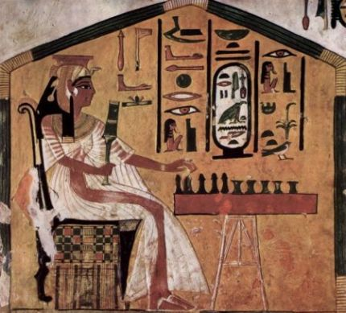

Senet, “The Game of Passing” is probably the oldest board game in the world. It dates back to the Predynastic Period of Ancient Egypt, over 5,000 years ago. Senet was originally designed as a secular game, but as the Egyptian religion evolved and fascination with the occult increased, the game transformed into a simulation of the netherworld, with its squares depicting major divinities and events in the afterlife.
The exact rules of the game were lost with time, but with the help of tomb paintings and carvings, and observing its descendants, the rules of the game can be approximately reconstructed. Senet is a racing game for two players. The object of the game is to be the first to carry all of your pawns off the board, while stalling your opponent by either blocking his way or moving back his pieces.
The Senet board consists of 30 squares, arranged in 3 rows of 10 squares each. The game begins with 14 playing pawns, 7 for each player, placed alternately from the top left-hand corner of the board. The pawns move on the board following a ‘Z’-shaped path – right along the top row, left along the middle row, and right again along the bottom row. After reaching the bottom-left corner, the pawns leave the board.
The game is played in turns. Each turn, a player throws four two-sided casting sticks, and moves one of his pawns a number of spaces forward, according the result of the sticks. You can make one of the following moves: (1) Move a pawn into an empty square. (2) Move a pawn into an unguarded enemy occupied square. If your pawn lands on an enemy occupied square, the enemy pawn retreats to your pawn’s departure square. (3) Move a pawn off the board.
If two or more pawns of the same army occupy adjacent squares, these pawns form a ‘Shield’, meaning that opponent pawns cannot land on any of the shielded squares. Three or more pawns of the same army occupying adjacent squares form a ‘Block’, which also denies enemy pawns from jumping over them.
If a player throws a four or a five, he gains a bonus consecutive turn. If a player cannot move any of his pawns forward the exact number of spaces, he must move one of his pawns backwards by the same number of spaces, and no bonus turn is granted. If you cannot move any of your pawns either forward or backward – you lose a turn.
There are several special squares on the board:
Square 15, The House of Rebirth: Acts as a shield against enemy pieces, even for an isolated pawn. It also serves as a landing ground for pawns trapped in The House of Water.
Square 26, The House of Happiness: Acts as a shield. It also grants the player an extra turn even if the player did not throw a four or five. A player can leave the board from this square by throwing a five.
Square 27, The House of Water: Acts as a trap sending pawns back to The House of Rebirth, or even further back if The House of Rebirth is already occupied. Cancels a bonus turn.
Square 28, The House of Three Truths: Acts as a shield. A player leave the board from this square by throwing a three.
Square 29, House of Re-Atum: Acts as a shield. A player can leave the board from this square by throwing a two.
Square 30, The House of Ra: Acts as a shield. A player can leave the board from this square by throwing a one.
